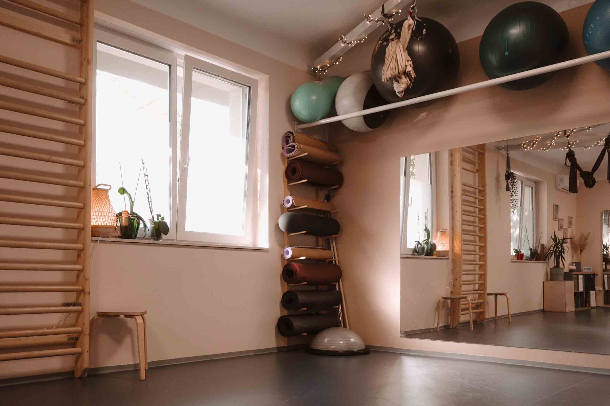
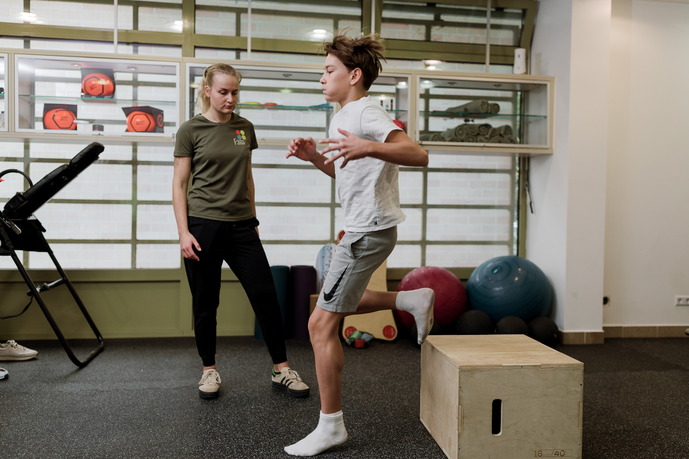

Mexikói útZugló · Mexikói út 32/b
- Gyógytorna, manuálterápia, komplex terápia
- Gerincferdülés-terápia
- Masszázsterápiák
- InBody 770 + táplálkozási tanácsadás
- Csoportos órák és jógaKattintható órarend

Egészség- és mozgásközpont két budapesti helyszínen: gyógytorna, manuálterápia, masszázs, jóga és sportrehabilitáció. Egy szemlélettel: úgy kint, mint bent.

A két alapító hitvallása · 2020 óta
Megálmodtunk egy olyan helyet, ahol van idő minden vendéget végighallgatni. Ahol az ember el tud lazulni, meg tud nyílni. Biológiai, pszichés és szociális lényünk összefonódik, egymástól el nem választható.
Test és mozgás
Egyensúly
Mexikói útZugló · Mexikói út 32/b
Reitter Ferenc utcaXIII. · Reitter Ferenc u. 48.
Egy helyszínen dolgozunk partnerünkkel, a Faster Laborral.
„Néhány hónapja kezdtem el Lillához járni gyógytornára és manuálterápiára. Már az első alkalommal tudtam, hogy jó kezekben vagyok. Alapos és részletes állapotfelméréssel kezdtünk, ezután indult a személyre szabott kezelés. Néhány hét alatt jelentősen javultak a tüneteim."Hédi · gyógytorna, manuálterápia
„A keresztszalag-szakadásom utáni egy évben Lilla segített a rehabilitációban. Kedves és türelmes, de következetes és szakmailag is nagyon jó. Mindig tudta, hogy mikor mi kell nekem."Orsolya · sportrehabilitáció
„Szuper hely, kiváló szakemberekkel. Több szolgáltatásukat is kipróbáltam, egytől egyig lelkes, kedves, hozzáértő szakemberekhez volt szerencsém."Rebeka · gyógytorna, jóga, masszázs
Google-értékelésekből, a vendégeink saját szavaival.
Első alkalom
Ötven perc, teljes körű fizikális vizsgálat, és egy terv, ami rólad szól. A többi fejezet ebből következik.